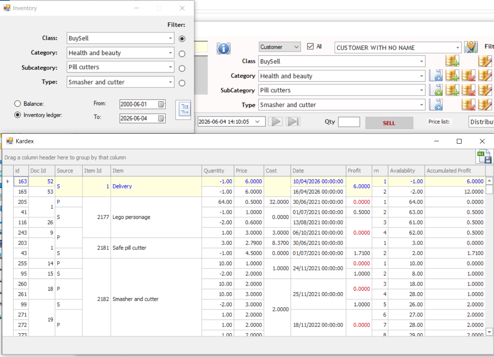
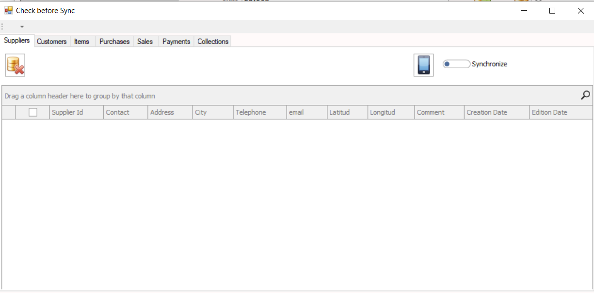
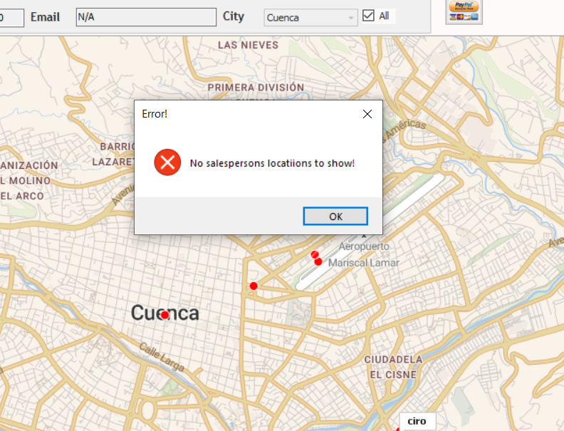
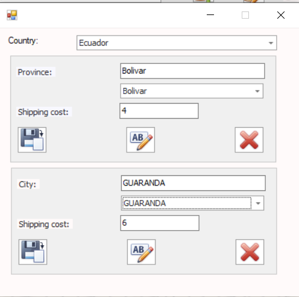

Designed For Growing Businesses
This software was built to provide the robustness typically found in enterprise systems while remaining practical and easy to use. Organizations can manage customers, suppliers, inventory, sales, purchases, territories, field personnel, synchronization processes, and operational reporting from a unified environment.
The platform integrates desktop software, mobile applications, online stores, and synchronization services, helping businesses maintain accurate information across multiple environments.
Sales & Purchase Transactions
Central transaction screen used to register sales, purchases, invoices, credits, debits, and commercial operations. Designed for high productivity and daily operational efficiency.

Advance Payments & Settlements
Manage customer advances, supplier prepayments, invoice settlements, payment applications, and reconciliation of outstanding balances.

Customer Ledger
Detailed customer account history showing invoices, payments, balances, credits, debits, and account movements. Provides complete financial visibility.

Commercial Administration
Maintain price lists, pricing structures, salespersons, purchasing agents, commercial territories, and sales zones.

Inventory Ledger & Stock Control
Advanced inventory reporting including item movement history, stock balances, transaction tracking, and inventory auditing capabilities.

Integrated Support Center
Built-in support request platform allowing users to communicate directly with the development team, submit incidents, and request assistance.

Graphical Product Catalog
Visual product catalog displaying images, descriptions, pricing information, and inventory details in an intuitive format.

System Configuration
Comprehensive parameter administration module used to configure operational rules, business policies, and system behavior.

Synchronization Center
Transfer and synchronize information between desktop systems, mobile applications, field operations, and online stores.

Customer & Supplier Administration
Manage customer and supplier records, contact information, tax data, commercial conditions, and operational details.

Distance Analysis
Calculate distances between customers, suppliers, sales territories, and operational locations to improve planning.

Sales Team Mapping
Visualize sales personnel geographically, improve territory management, and optimize field activities.

City Administration
Maintain cities and geographic reference data used throughout the application for logistics, reporting, and commercial operations.

Georeferenced Customers & Suppliers
Store geographic coordinates for customers and suppliers to enable mapping, route optimization, and proximity analysis.